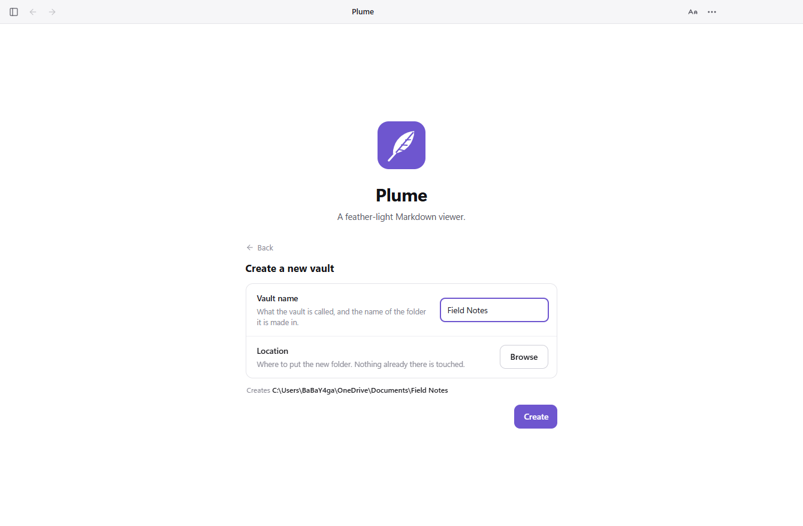
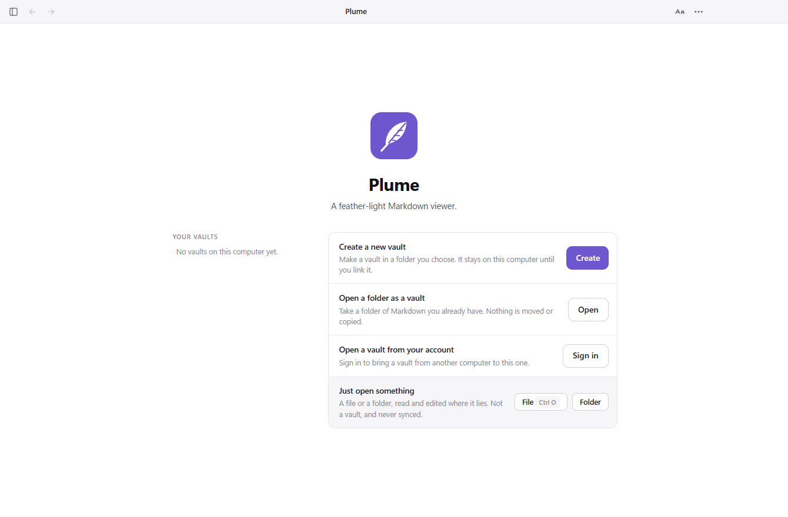
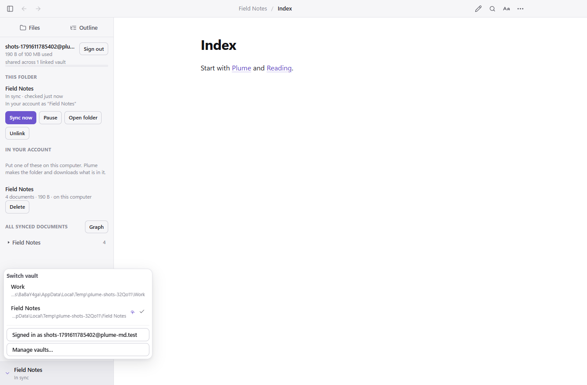
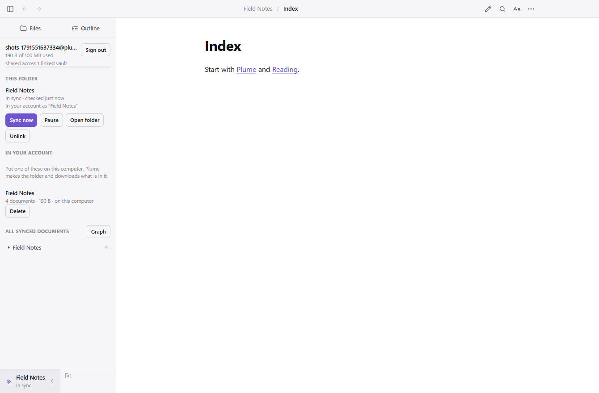

Opens instantly
No workspace to import, no project to set up. Double-click and read.
Double-click any .md file and it opens instantly.
Click a paragraph to edit it where it sits. Make the folder a vault when you want the
whole of it joined up — and link it to your account only if you want it on another
computer.
Free and open source · Windows, macOS and Linux · Source on GitHub
Every other Markdown app wants to own your notes first and show them second.
No workspace to import, no project to set up. Double-click and read.
Press the pencil for the raw Markdown. Make, rename and move notes from the sidebar — renaming takes every link with it.
Name a vault and Plume makes the folder, or claim notes you already have. Backlinks, search and a graph across all of it, no account needed — and it opens there next time. Link it to an account and it syncs.
It also reads Obsidian vaults, renders Mermaid and KaTeX, and gives Claude Code a place to keep project memory. All of it is in the documentation
Ctrl+E for the whole file.A vault is a folder of your Markdown with an index beside it. Plume never makes one behind your back, and never limits how many you keep.




One per project, one for work, one for everything else — there is no number. The free account holds 100 MB of synced documents in one pool shared across all of them, so a hundred small vaults and one large one look the same to the meter.
A vault that never leaves this computer works offline, forever, with no account: notes, backlinks, search, the graph. It uses none of your storage, and nothing nags you to connect it to anything.
Two vaults holding a note of the same name are two different notes, and they sync at the same time without meeting. Nothing is merged, and nothing is overwritten to settle a disagreement.
A linked vault opens at plume-md.com/notes.html — the same notes, rendered the same way, on a machine where Plume is not installed. Read them, edit them, save them back.
Plume comes back into the vault you were last in, on the note you were last reading. That place is remembered inside the vault and never leaves the computer that wrote it, so a laptop and a desktop each keep their own.
A folder is never silently a vault, and a vault never silently syncs. How the vault model works
Free, open source, and about as heavy as a feather. Version 0.0.4.